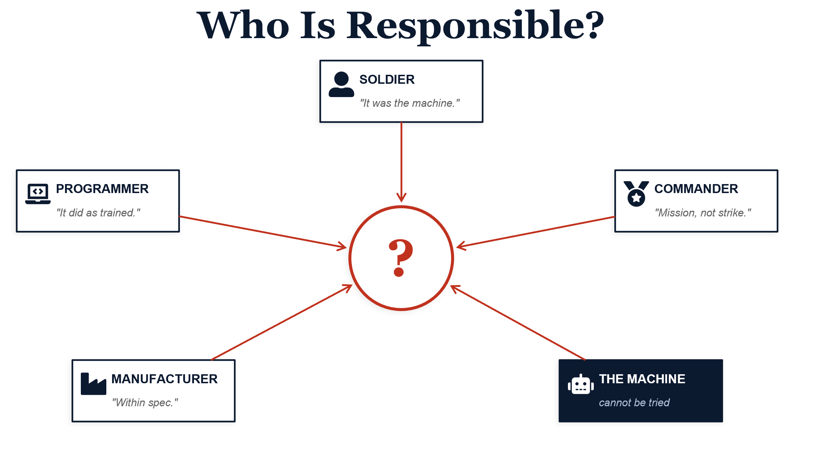
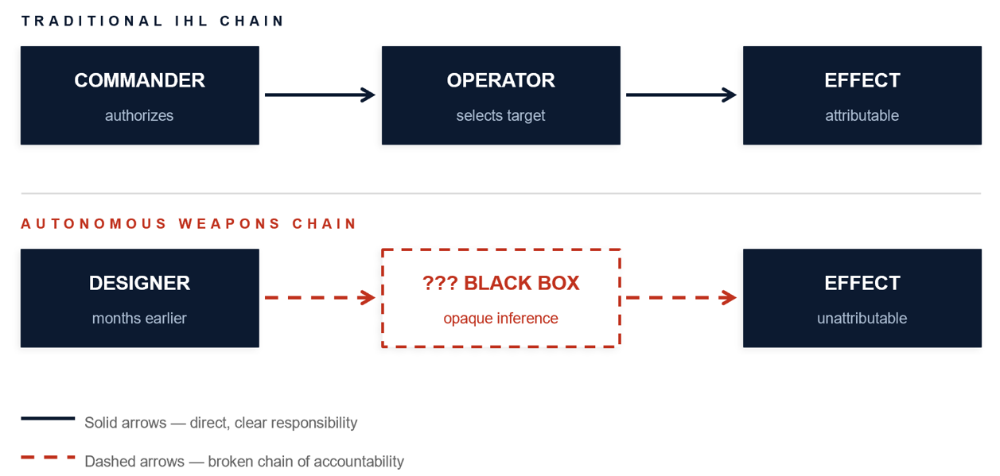
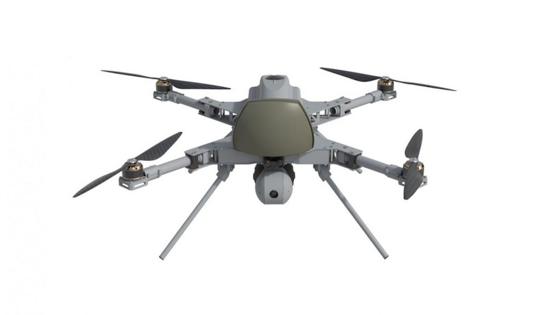
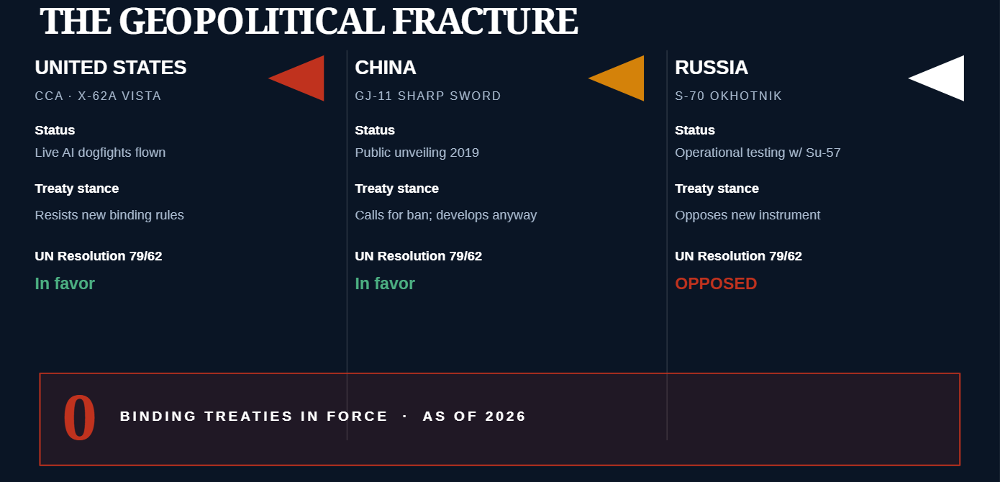
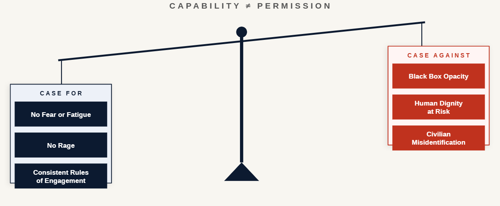
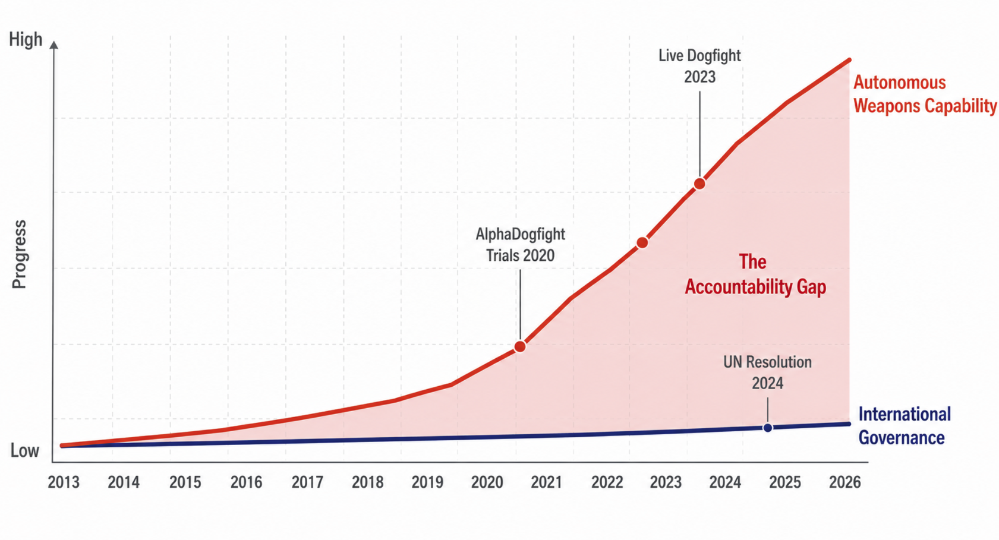

I. The Kill That No One Owned
Imagine a courtroom. A family has lost someone. The question before the judge is simple: who pulled the trigger? The soldier says it was the machine. The programmer says the algorithm did what it was trained to do. The commanding officer says he authorized a mission, not a specific strike. The manufacturer says the system performed within specifications. The courtroom falls silent. There is no one left to blame.
This is not a thought experiment from a legal philosophy seminar. It is the operational trajectory that defense lawyers, international law scholars, and human rights advocates say we are building toward with every autonomous weapons program now in development. And it is no longer a distant concern.
In September 2023, the U.S. Air Force and the Defense Advanced Research Projects Agency, better known as DARPA, staged the world's first live dogfight between an AI controlled aircraft and a human pilot. The AI flew a modified F-16 known as the X-62A VISTA. The two jets closed to within 2,000 feet of each other at speeds above 1,200 miles per hour. When officials were asked who won the encounter, they declined to answer, citing national security (Defense One, 2024; Breaking Defense, 2024). The operational details are classified. The underlying capability is not. And the legal and ethical structures needed to govern that capability remain, as of this writing, entirely absent from binding international law.
We are deploying technologies that make lethal decisions while systematically removing the humans whose job judgment has always been.
This article examines three interlocking questions. First: what has been achieved technically in autonomous combat aviation, and how close are we to fully autonomous lethal systems? Second: what legal and ethical problems does autonomy create, and why do current frameworks fall short? Third: what geopolitical and structural barriers block the international community from governing these systems before they cause irreversible harm? Taken together, the answers describe a moving target. The technology is advancing on a much faster clock than the law, and the gap between the two is no longer a matter only for academics.

II. From Remote Control to Machine Judgment
The history of unmanned military aviation is a history of gradually increasing autonomy. The MQ-9 Reaper, the most recognizable armed drone in the U.S. arsenal, is a remotely piloted aircraft, not an autonomous one. A human operator, seated at a ground control station that may be thousands of miles from the combat zone, watches a live video feed and makes every decision to fire. The aircraft executes; it does not choose. International humanitarian law has long been structured around exactly this arrangement, in which a person holding a weapon selects a target and bears the legal and moral responsibility for that choice (Human Rights Watch, 2015). The Reaper, despite being unmanned, fits comfortably within that older model. A pilot in Nevada is still the one pulling the trigger.
The X-62A VISTA represents a fundamental break from that arrangement. The aircraft itself is a heavily modified F-16D Block 30 originally built in 1992, retrofitted with a reconfigurable flight control computer that allows engineers to load any set of control laws they choose. That adaptability made it the right testbed for DARPA's Air Combat Evolution program, launched in 2019. ACE was designed to go beyond simply demonstrating that software could pilot a fighter jet; earlier remotely piloted systems had cleared that bar years before. The harder challenge was whether a machine learning agent could be trusted to fly one in close quarters combat against an opposing fighter, and whether crewed aircraft nearby would accept its judgment as reliable.
The progression was deliberate. In August 2020, AI agents defeated experienced human pilots in simulated F-16 combat during the AlphaDogfight Trials. The result was treated, at the time, as a curiosity. Software beating software in a simulator is not the same as a sky. By December 2022, the program had moved from simulation to the actual aircraft, accumulating more than seventeen hours of autonomous flight at Edwards Air Force Base in California (DARPA, 2023). By September 2023, the AI was flying in live, within visual range combat against a human piloted F-16 at closing speeds approaching 1,200 miles per hour.
Two human safety pilots flew aboard the X-62A throughout those tests, with authority to assume control at any point. According to public accounts of the program, they never exercised it (The Aviationist, 2024). The ACE team pushed through more than 100,000 modifications to flight critical software across 21 test flights in under a year, a pace DARPA itself described as "an unprecedented pace of development" (Flight Global, 2024). Secretary of the Air Force Frank Kendall, who personally flew in the X-62A in May 2024, called the 2023 trials "a transformational moment" in combat aviation (DARPA, 2024).
Those safety pilots represent a distinction that tends to disappear in the headlines. In every test conducted so far, humans retained the ability to intervene. The distance between an AI that a pilot can disengage and an AI that operates fully on its own in combat is the threshold no international treaty currently defines, and the one the U.S. Air Force is openly preparing to cross. The Collaborative Combat Aircraft program envisions fleets of lower cost autonomous fighters operating alongside crewed F-35s and the forthcoming Next Generation Air Dominance platform, a concept sometimes called the loyal wingman. Under this arrangement, autonomous drones expand a crewed aircraft's reach by performing reconnaissance, electronic warfare, or strike missions the pilot directs but does not fly. Two prototypes from General Atomics and Anduril entered ground testing in 2024 and are scheduled for flight in 2026 (Defense One, 2024). These are not laboratory demonstrators. They are designed for production.
166 nations have demanded action. Zero binding treaties exist. The gap between those two numbers is the problem.
III. The Accountability Gap
The phrase "accountability gap" entered the academic literature through a 2013 article by Michael Schmitt and Jeffrey Thurnher titled "Out of the Loop: Autonomous Weapon Systems and the Law of Armed Conflict," published in the Harvard National Security Journal. Their argument was specific. When an autonomous system makes a targeting decision that breaks the law of armed conflict, the chain of accountability that international humanitarian law assumes simply breaks apart. The programmer was not at the scene of the strike. The commanding officer did not authorize that particular engagement. The soldier did not direct a weapon. The machine cannot be charged, imprisoned, or punished (Schmitt & Thurnher, 2013). The result is a legal void at the center of the system designed to deter wartime atrocities.
International humanitarian law, often abbreviated as IHL, is the body of rules governing how parties to an armed conflict may fight. Its structure rests on three interlocking principles. Distinction obligates combatants to separate military targets from civilians. Proportionality demands that anticipated civilian harm not exceed the concrete military gain. Precaution requires that feasible steps be taken to limit civilian casualties. Each principle assumes, at its foundation, a human being exercising judgment in the moment. The International Committee of the Red Cross, the formal custodian of these rules, has argued that IHL duties are addressed to those who plan, decide upon, and carry out an attack, and that lawful use of autonomous weapons therefore obliges combatants to maintain a meaningful degree of human control over how those systems function (ICRC, 2016, p. 10).
There are obstacles to holding individual operators criminally liable for the unpredictable actions of a machine they cannot understand, in particular because autonomous weapons systems that rely on AI may make determinations through opaque, 'black box' processes. Human Rights Watch, 2025
Human Rights Watch examined this problem in depth in an April 2025 report, working through how lethal autonomous weapons systems create tensions with at least six core obligations under international human rights law, including the right to life, the right to remedy, and the right to a fair trial. The most consequential thread of the report addressed what the authors call the black box problem: engineers who build modern machine learning systems often cannot reliably explain, after the fact, why a particular decision was reached. The internal parameters of a trained neural network are not an auditable rulebook. They are millions of numeric values shaped by exposure to data, and the connection between those values and any specific output is rarely interpretable in human terms.
This opacity is not a temporary engineering inconvenience that better tools will eventually eliminate. It is a structural characteristic of the machine learning approach that also accounts for these systems' remarkable performance. A simpler, fully transparent decision algorithm could be examined rule by rule, but it could not fly a fighter jet through a chaotic dogfight at 1,200 miles per hour. The very property that makes the system capable is the one that renders it legally illegible. That tension sits at the heart of every current governance proposal for autonomous weapons.

IV. The Line May Already Be Crossed: Libya, 2019
In March 2021, a UN Panel of Experts released its final report on the armed conflict in Libya. The report described an incident in which a Turkish manufactured Kargu-2 loitering munition had been deployed against retreating fighters of the Libyan National Army. The panel found that the munition was set to engage targets without any data link to the operator, and that it may have attacked personnel without a human authorizing the specific strike (UN Panel of Experts on Libya, 2021, p. 17).
The Kargu-2 is also engineered to swarm: STM's own promotional materials describe coordinating multiple units as a single attack package. The UN panel was careful in its wording, and the full operational details of the Libyan engagement remain classified. The report stopped short of asserting with certainty that an autonomous strike had occurred. What it documented was substantial circumstantial evidence that one might have. Even at that lower threshold, the stakes were significant. If the account is accurate, this constituted the first publicly documented instance of a lethal autonomous weapons system independently making a targeting decision in actual combat. No individual has been held responsible. No public inquiry into autonomous decision making in that engagement has taken place. The absence of any accountability process is itself informative: the international community lacks not only the rules but the institutional machinery to investigate or adjudicate a strike that may have been made by software. Multiple academic and policy publications have since cited Libya as evidence that the accountability gap is not theoretical but already operational (Perrin, 2025; Arms Control Association, 2025).

V. An Arms Race With No Referee
The geopolitical dynamics around autonomous weapons carry uncomfortable echoes of the early nuclear arms race. Each major power sees strategic incentives to press forward and structural reasons to distrust any framework that might slow it down. The United States, China, and Russia are all investing heavily in AI enabled military aviation. Each sees the same cluster of potential advantages: faster reaction times, longer endurance on mission, and the removal of human pilots from the most dangerous sorties. Each is equally aware that accepting unilateral ethical constraints could leave it fielding less capable weapons than adversaries operating under no such limits (Horowitz, 2018; Arms Control Association, 2025).
China's GJ-11 Sharp Sword is a flying wing stealth drone first shown publicly at a military parade in October 2019. Russia's S-70 Okhotnik has been reported in operational testing alongside the Su-57 fighter, with state media releasing footage of it conducting weapons release trials. Both systems are positioned as autonomous wingmen for crewed aircraft, performing missions ranging from electronic warfare to direct strike, the same fundamental concept as the U.S. Collaborative Combat Aircraft program. The degree of autonomous authority each is granted in actual operations is not publicly known, but all three major air powers are fielding their own versions of the same idea without waiting for any international agreement.
The international body most directly engaged with autonomous weapons governance is the Convention on Certain Conventional Weapons, often abbreviated as the CCW. Its Group of Governmental Experts on Lethal Autonomous Weapons Systems has been convening in Geneva since 2014. In 2019, the group agreed on eleven guiding principles, including full applicability of IHL and the preservation of human accountability throughout an autonomous system's entire life cycle (Arms Control Association, 2025). Those principles were adopted by consensus. They are also nonbinding. The CCW's consensus decision making rule means a single member state can block any move toward a binding instrument. The United States has consistently opposed treaty language, arguing that existing IHL is already adequate and that a new agreement would be redundant (Lieber Institute, 2025).
In December 2024, the UN General Assembly adopted Resolution 79/62 on lethal autonomous weapons systems by a vote of 166 to 3, with Belarus, North Korea, and Russia opposed and a handful of states abstaining. Symbolically, the margin represented an overwhelming statement that the international community views autonomous weapons as a problem demanding formal attention. Practically, a General Assembly resolution creates no binding legal obligations and carries no enforcement mechanism (Perrin, 2025). It is an expression of collective concern, not law. Some observers have characterized the moment as an Oppenheimer parallel, the point at which scientists and engineers have assembled something whose implications they recognize, while political institutions have not yet caught up (Arms Control Association, 2025).

VI. The Humanitarian Case For and Against
It would be intellectually dishonest to treat autonomy in weapons systems as an uncomplicated threat. Proponents advance a humanitarian argument that deserves serious engagement. Machines do not experience fear, exhaustion, or rage. Human soldiers under intense stress have, throughout recorded history, committed atrocities that no calm observer would have sanctioned. In principle, a well designed autonomous system operating within precisely specified rules of engagement might produce more consistent and discriminating decisions than a frightened nineteen year old in a chaotic urban combat environment. Secretary of the Air Force Frank Kendall made exactly this case in discussing the ACE program, noting that the AI used in the X-62A trials had operated within American norms for the safe and ethical use of autonomous technology (DARPA, 2024).
Capability is not permission. That a machine can make a targeting decision does not mean we have resolved who bears the moral and legal weight of that decision.
The counterargument runs at several levels. At the empirical level, autonomous weapons carry distinctive risks to civilian populations by reducing combatants' capacity to accurately distinguish between lawful and unlawful targets, particularly in the irregular, ambiguous conflict environments where most contemporary fighting actually occurs (Budustour, 2024). A system trained primarily on simulation data may behave in unreliable ways when it encounters conditions that fall outside what its training covered. A child carrying a stick may, to a computer vision classifier, produce sensor readings statistically close to those of a combatant carrying a weapon. In a system authorized to fire on its own judgment, that error has irreversible consequences.
At a more fundamental level, no degree of technical accuracy resolves the objection the ICRC has placed at the center of its current policy work. Deploying lethal force against a person without a human being making the decision may constitute a violation of human dignity that cannot be addressed by any specific IHL rule. The Martens Clause of international humanitarian law establishes that civilians and combatants retain protections derived from the principles of humanity and the dictates of public conscience, even in situations that existing treaties do not explicitly cover (ICRC, 2016, p. 44). On this view, the question is not whether an AI can aim accurately. It is whether any killing that proceeds without human moral agency can be considered lawful at all, a question about the nature of war itself, not merely its conduct.

VII. A Timeline of the Accountability Gap
The following timeline illustrates how rapidly autonomous weapons capability has advanced relative to international governance efforts. The capability column moves quickly. The governance column does not.

VIII. What Adequate Governance Would Look Like
The international community is not without options, and it is worth being concrete about what a credible governance framework would actually demand. Drawing on the 2024 CCW rolling text, the American Society of International Law has identified several requirements a future binding treaty could impose. Systems must be predictable, reliable, traceable, and explainable. Meaningful human oversight must be maintained, particularly for the act of selecting and engaging targets. Systems must be capable of being deactivated after deployment. Use in areas densely populated with civilians must be prohibited (Perrin, 2025). The list describes what the ACE program is already pursuing internally as a matter of engineering and policy discipline. A treaty would make the same standards universally obligatory.
The concept of meaningful human control is central to virtually every governance proposal on the table, but its precise definition remains contested. The core principle is that a human being must be capable of understanding, anticipating, and intervening in an autonomous weapon's targeting decisions in a way that is genuinely substantive rather than nominal (Schmitt & Thurnher, 2013; ICRC, 2016). The engineering reality complicates this considerably. An AI combat aircraft can process a tactical situation and act on it in microseconds. Substantive real time human supervision at that speed is physically impossible. This implies that meaningful human control, to the extent it can be achieved at all, must be exercised upstream: through the design of engagement parameters, the specification of prohibited target categories, and the geographic and temporal boundaries within which the system is permitted to act. The moral weight of targeting choices would then rest on design decisions made potentially months or years before any specific engagement.
The ICRC has been explicit in its recent statements, calling for new international legally binding rules that would prohibit autonomous weapons that are unpredictable or designed to engage persons, and impose strict constraints on all others (ICRC, 2026). What is required, in other words, is a treaty. Whether sufficient political will exists to negotiate one is a separate question. The decade long trajectory of the CCW process suggests it does not, at least not yet. Whether shifting public awareness, civil society campaigns, or a sufficiently visible failure of an autonomous system in the field could change that calculation is one of the most consequential open questions of this decade.
Five things a real governance framework would require, and that no current international agreement mandates.
IX. The Empty Cockpit
The fighter jet banks hard. An algorithm assesses geometry, velocity, and threat probability in fractions of a millisecond. A targeting decision is made. No human directed it. No human could have stopped it in time. If someone dies, the courtroom will be as described in the opening of this article: full of people, none of whom pulled the trigger.
The X-62A VISTA is an experimental aircraft operating under close human supervision. The Kargu-2 in Libya operated in an active armed conflict. The distance between those two situations is shorter than the international community has been willing to acknowledge. And the Collaborative Combat Aircraft program, China's GJ-11 Sharp Sword, and Russia's S-70 Okhotnik together represent the next generation: systems designed not for testing but for deployment, not for demonstration but for war.
This article has argued four things. The accountability gap is real and structural, not a temporary artifact of incomplete law. The Libya incident demonstrates that the gap has already produced at least one engagement in which it may have been exploited. The geopolitical dynamics propelling autonomous weapons development actively resist the governance frameworks that could close it. And the technical capabilities being fielded are outpacing both legal and ethical infrastructure by a widening margin. None of these claims is comfortable, but each is grounded in the public record.
What is required is a binding international legal framework that specifies what meaningful human control means in concrete operational terms, who bears accountability when an autonomous weapon causes unlawful harm, and which categories of systems and deployment contexts are categorically off limits. The engineering community has a distinctive role to play in this conversation. The systems now being built encode ethical decisions at the level of design, and the engineers who build them are, in a meaningful sense, making targeting choices before any specific mission is ever authorized. That is not a comfortable thing to hear if you write code for a living. It is also true.
The cockpit is empty. The question is not whether that is technically impressive. It is whether the world is ready for what that emptiness means.
References (APA 7th Edition)
Adamson, L. (2025, February 11). The future of warfare: National positions on the governance of lethal autonomous weapons systems. Lieber Institute West Point. https://lieber.westpoint.edu/future-warfare-national-positions-governance-lethal-autonomous-weapons-systems/
An AI took on a human pilot in a DARPA-sponsored dogfight. (2024, April 19). Defense One. https://www.defenseone.com/technology/2024/04/man-vs-machine-ai-agents-take-human-pilot-dogfight/395930/
Anthropic. (2025). Claude (claude-sonnet-4-6) [Large language model]. https://claude.ai
Budustour, L. (2025). AI & Autonomous Weapons: Can International Humanitarian Law Keep Up? https://papers.ssrn.com/sol3/papers.cfm?abstract_id=5019468
Defense Advanced Research Projects Agency. (2023). ACE Program’s AI Agents Transition from Simulation to Live Flight. (2023). Darpa.mil. https://www.darpa.mil/news/2023/ace-program-transition
Defense Advanced Research Projects Agency. (2024). ACE Program Achieves World First for AI in Aerospace. (2024). Darpa.mil. https://www.darpa.mil/news/2024/ace-ai-aerospace
Davison, N. (2018). A legal perspective: Autonomous weapon systems under international humanitarian law. https://www.icrc.org/sites/default/files/document/file_list/autonomous_weapon_systems_under_international_humanitarian_law.pdf
Docherty, B. (2016, April 15). Mind the Gap | The Lack of Accountability for Killer Robots. Human Rights Watch. https://www.hrw.org/report/2015/04/09/mind-gap/lack-accountability-killer-robots
Docherty, B. (2025, April 28). A Hazard to Human Rights. Human Rights Watch. https://www.hrw.org/report/2025/04/28/a-hazard-to-human-rights/autonomous-weapons-systems-and-digital-decision-making
D’Urso, S. (2024, April 18). AI Flew X-62 VISTA During Simulated Dogfight Against Manned F-16. The Aviationist. https://theaviationist.com/2024/04/18/ai-flew-x-62-vista-during-dogfight/
Finnerty, R. (2024, April 18). DARPA tests dogfighting AI against human fighter pilot. Flight Global. https://www.flightglobal.com/fixed-wing/darpa-tests-dogfighting-ai-against-human-fighter-pilot/157885.article
Horowitz, M. C. (2018). Artificial Intelligence, International Competition, and the Balance of Power (May 2018). Repositories.lib.utexas.edu, 1(3). https://doi.org/10.15781/T2639KP49
ICRC. (2023, March 30). Autonomous weapons. International Committee of the Red Cross. https://www.icrc.org/en/law-and-policy/autonomous-weapons
Kmentt, A. (2025). Geopolitics and the Regulation of Autonomous Weapons Systems | Arms Control Association. Armscontrol.org. https://www.armscontrol.org/act/2025-01/features/geopolitics-and-regulation-autonomous-weapons-systems
Marrow, M. (2024, April 19). In a “world first,” DARPA project demonstrates AI dogfighting in real jet. Breaking Defense. https://breakingdefense.com/2024/04/in-a-world-first-darpa-project-demonstrates-ai-dogfighting-in-real-jet/
Nasu, H. (2021, June 10). The Kargu-2 Autonomous Attack Drone: Legal & Ethical Dimensions. Lieber Institute West Point. https://lieber.westpoint.edu/kargu-2-autonomous-attack-drone-legal-ethical/
Perrin, B. (2025, January 24). Lethal Autonomous Weapons Systems & International Law: Growing Momentum Towards a New International Treaty | ASIL. Asil.org. https://www.asil.org/insights/volume/29/issue/1
Schmitt, M. N., & Thurnher, J. S. (2013). "Out of the loop": Autonomous weapon systems and the law of armed conflict. Harvard National Security Journal, 4(2), 231–281. https://centaur.reading.ac.uk/89863/1/Vol-4-Schmitt-Thurnher%20out%20of%20the%20loop.pdf
United Nations General Assembly. (2024, December 2). Lethal autonomous weapons systems (Resolution 79/62). https://documents.un.org/doc/undoc/ltd/n24/305/45/pdf/n2430545.pdf
United Nations Panel of Experts on Libya. (2021). Final report of the Panel of Experts on Libya established pursuant to resolution 1973 (2011). United Nations Security Council. https://documents.un.org/doc/undoc/gen/n21/037/72/pdf/n2103772.pdf
U.S. Air Force. (2024, April 30). X-62A VISTA flies over Edwards Air Force Base [Photograph]. DVIDS. https://www.dvidshub.net/image/8417485/x-62a-vista-flies-over-edwards-afb